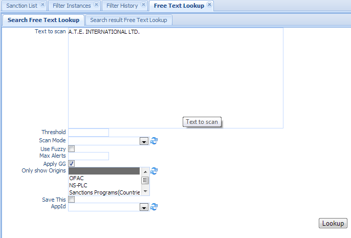

Free Text Lookup¶
Free Text Lookup is a very useful function to allow user to scan any free-format text or message using the screening instance/engine set up in the previous section. It also can be used as a test tool to test screening instance and the sanction List
Click the Free Text Lookup in the left navigation menu under Screening management, a new Free Text Lookup Tab folder will be created in the right panel.
There are 2 sub-Tab folders, Free Text Lookup and Search Result Free Text Lookup.
Free Text Lookup¶
Search Criteria
| Field Name | Description |
|---|---|
| Text to Scan | The text to be scanned. |
| Threshold | Threshold is a matching percentage that must be exceeded to allow the result as an alert. |
| Default is 30% or above match will be considered as an alert.. | |
| Scan Mode | The mode that screening engine uses to do the search. |
| Currently there are three scan modes: Loose, Medium and Strict. | |
| Use Fuzzy Checkbox | If selected, it will use fuzzy logic for misspell check. |
| Max Alerts | Set maximum alerts returned. Default is 50. |
| Apply GG Checkbox | If selected, it will apply Exception(Good Guy) to the result. |
| Only show origin | Only show alerts that are on the selected ORIGIN. By default it shows alerts on all the ORIGIN. |
| Save This Checkbox | If selected, it will save this search in the Watch list Alert table. |
| You must select an OrgUnit Id. Every watch list alert is linked to an origination unit. | |
| OrgUnit Id | The origination unit this alert will be saved to. Only apply when Save This checkbox is selected. |
Functional buttons¶
:
- Lookup: – click the Lookup button to scan the text; and switch to the “Search Result Free Text Lookup” Tab.
Search Result Free Text Lookup¶

The top part is the table which shows the list of the watch list alerts that meet the search criteria. The bottom part is the details of the selected entry. It shows the entNum of the alert, the score, match on name or name synonyms (Alias), the match term( the text in the scan text that causes the alert), and list created user and date, list modified user and date, etc.